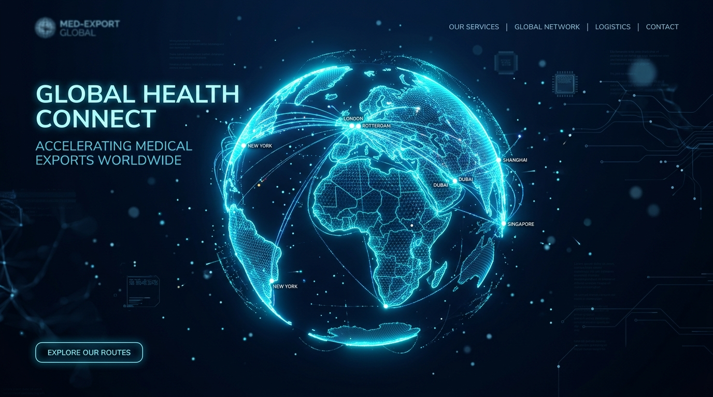
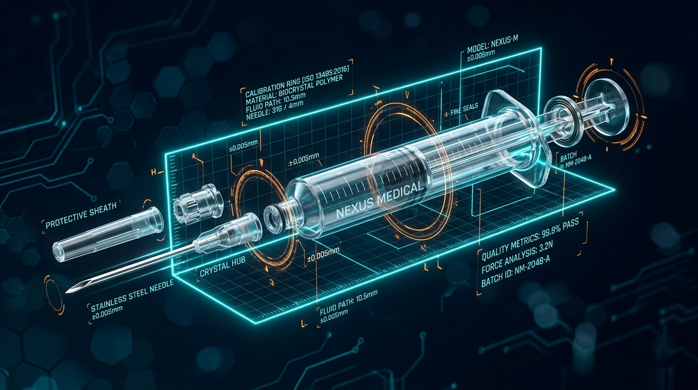
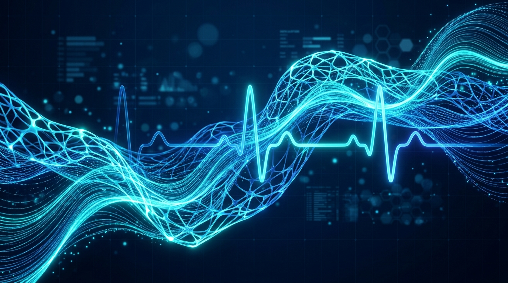

Compare the 3 visual options below to replace the DNA animation

كرة أرضية تفاعلية ثلاثية الأبعاد هولوجرامية تدور مع حركة الماوس، ينبثق من مصر خطوط وأقواس ملاحية مضيئة (Pulsing Shipping Arcs) تتجه نحو قارات وموانئ العالم، مع جزيئات عائمة ونقاط شحن حية تحاكي تصدير الحاويات والمستلزمات الطبية.

مجسم 3D كريستالي لسرنجة ومستلزمات طبية معقمة تطفو في الفضاء، وتتفكك هندسياً (Exploded View) بنعومة عند حركة الماوس مع مسح ليزري رقمي ومؤشرات جودة ومقاييس ISO Class 7/8 Cleanrooms.

شبكة طاقة ثلاثية الأبعاد انسيابية كالحرير تتموج مع خط نبضات القلب الحيوي (ECG Pulse) بلون السيان والأزرق الساطع، تعطي إحساساً بالتعقيم والرقي الطبي الفائق مع خفة حركة فائقة السرعة على جميع الشاشات.